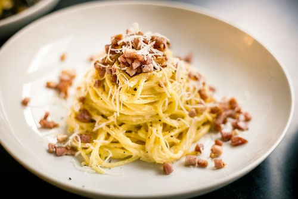

Pasta Carbonara

Crispy pork and chewy pasta come together in just minutes for this rich twist on an Italian classic.
Ingredients
- 6 ounces guanciale or pancetta, cut into 1/4-inch dice
- Kosher salt
- 1 pound rigatoni or spaghetti
- 5 large egg yolks
- 1 large egg
- 1 cup freshly grated Pecorino Romano cheese, divided
- 3/4 teaspoon crushed red pepper
- Freshly ground black pepper
Steps
- In a small skillet, cook guanciale over fairly low heat, stirring until the fat is rendered, about 15 minutes. Let cool.
- Meanwhile, in a large pot of heavily salted boiling water, cook the pasta until al dente. Drain, reserving 1 cup of the cooking water.
- In a large bowl, whisk the yolks and egg with the guanciale and the leftover fat. Add the pasta, 1/4 cup of the reserved pasta water, and 2/3 cup of the cheese to the egg mixture and toss until creamy, about 1 minute; add more reserved cooking water if necessary. Add the crushed red pepper and season with salt and pepper.
- Serve in shallow bowls, sprinkled with the remaining cheese. Enjoy!